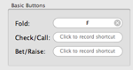
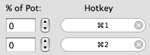
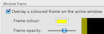
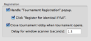
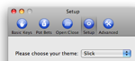

Discover BlazingStars
BlazingStars is an application to help you manipulate the PokerStars online poker client with quick keyboard controls, minimizing the use of the mouse. The program is designed for players who "multi-table", or play multiple poker tables and/or tournaments at the same time. Specific functions of the PokerStars client like pressing buttons and making bets are assignable to custom hotkeys. BlazingStars also contains facilities to deal with annoyances like popup windows and tournament lobbies. If you would like to know more about the features that BlazingStars can offer you, read on, or click here to learn how to get started quickly.
PRESSING YOUR BUTTONS. |
|
|  |
BlazingStars allows you to define keyboard shortcuts to press buttons in the PokerStars client, such as Fold / Call / Raise; advance action buttons like Check / Fold and Call Any; increasing or decreasing the size of bets; and more. |
BET HOW YOU WANT. |
|
|  |
BlazingStars allows you to pre-set bet amounts as a function of the size of the pot, in any percentage you wish. For example, you can pre-set a key to bet 25% of the pot, another to bet 75% of the pot, and so on. |
NARROW THE FIELD. |
|
|  |
To help keep you focused when multiple windows are open, BlazingStars can place a border on the currently active window. |
BATTENING THE HATCHES. |
|
|  |
BlazingStars helps you streamline your poker experience by handling common annoyances like tournament pop-ups and lobbies. |
CHOOSE YOUR THEME. |
|
|  |
BlazingStars works with many of the more popular PokerStars themes, and we're constantly adding more. |